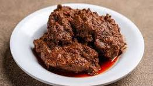

Beef Rendang Recipe

Description
Beef rendang is one of the original cuisines of Minangkabau descent and Sumatra’s culture. It is served on special occasions to honor guests and during festive seasons. It is a delicious Indonesian dish prepared with many herbs and spices. Slow cooking for a few hours until all the liquids have been completely absorbed by the meat. Beef rendang is best eaten with steamed rice and condiments such as fried onions and chili.
Ingredients:
- 1.000 gram daging sapi tanpa urat (paha/gandik)
- 2.500 ml santan
- 3 batang serai, memarkan
- 1 lembar daun kunyit, robek-robek, ikat
- 10 lembar daun jeruk
- 2 potong asam kandis
Spices:
- 250 gram cabai merah keriting
- 200 gram bawang merah
- 6 siung bawang putih
- 3 cm jahe
- 3 cm lengkuas
- 2 cm kunyit
- 3 sdt garam
Steps:
- Potong-potong daging bentuk empat persegi menjadi 20 potong.
- Masukkan santan ke dalam wajan, masukkan serai, daun kunyit, daun jeruk, dan bumbu halus. Jerang di atas api, masak sambil ditimba-timba hingga mendidih sampai 10 menit.
- Masukkan daging, aduk-aduk hingga mendidih, kecilkan api. Tutup wajan dan teruskan memasak sambil sekali-sekali diaduk agar tidak gosong hingga santan mengental.
- Buka tutup wajan, masukkan asam kandis. Teruskan memasak dengan api kecil sambil sekali-sekali diaduk hingga warnanya coklat kehitaman dan kering berminyak, angkat.